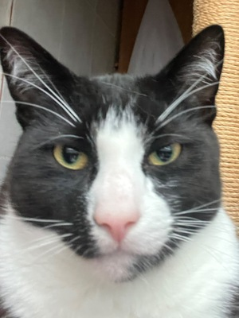
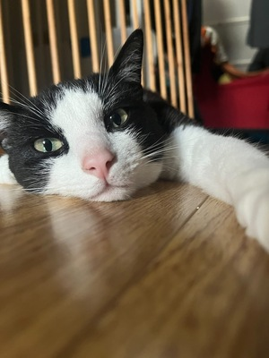
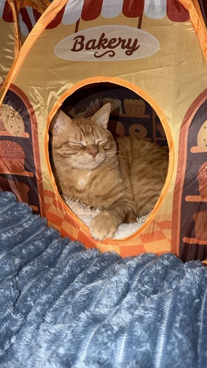

<!DOCTYPE html>
<html lang="en">

<head>
    <script src="https://cdn.jsdelivr.net/npm/jquery"></script>
    <script src="https://cdn.jsdelivr.net/npm/jquery.terminal/js/jquery.terminal.min.js"></script>
    <link rel="stylesheet" href="https://cdn.jsdelivr.net/npm/jquery.terminal/css/jquery.terminal.min.css" />
    <link rel="stylesheet" href="style.css" />
</head>

<body>
    <style>
        .terminal {
            --color: rgba(0, 200, 0, 0.99);
            --animation: terminal-glow;
            --glow: 1;
            --size: 2.4;
            --text-overflow: false;
        }

        body {
            margin: 0;
            background: black;
        }

        .terminal img[src*="blob:"],
        .terminal video {
            max-width: 100%;
        }

        .terminal .command {
            cursor: pointer;
        }

        #terminal {
            height: 100vh;
        }

        /* glow */
        .terminal {
            text-shadow: 0 0.2rem 1rem #0c7b46;
        }

        :root {
            --background: #031e11;
        }

        @media (min-width: 800px) {
            :root {
                --size: 1.2;
            }
        }

        @media (min-width: 1200px) {
            :root {
                --size: 1.5;
            }
        }

        /* to see yourself like in a mirror */
        .self {
            transform: scale(-1, 1);
        }

        .flicker {
            position: fixed;
            top: 0;
            left: 0;
            bottom: 0;
            right: 0;
            background: rgba(18, 16, 16, 0.2);
            opacity: 0;
            z-index: 1000;
            pointer-events: none;
            animation: flicker 10s infinite;
        }

        @keyframes flicker {
            0% {
                opacity: 0;
            }

            98.8% {
                opacity: 0;
            }

            98.9% {
                opacity: 0.552;
            }

            99.0% {
                opacity: 0.48287;
            }

            99.2% {
                opacity: 0.79543;
            }

            99.4% {
                opacity: 0.90687;
            }

            99.6% {
                opacity: 0.62254;
            }

            99.8% {
                opacity: 0.9925;
            }

            100% {
                opacity: 0;
            }
        }

        .scanlines {
            top: 0;
            left: 0;
            height: 100%;
            width: 100%;
            background: linear-gradient(to bottom,
                    rgba(255, 255, 255, 0),
                    rgba(255, 255, 255, 0) 50%,
                    rgba(0, 0, 0, .2) 70%,
                    rgba(0, 0, 0, .6));
            background-size: 100% .3rem;
            position: fixed;
            pointer-events: none;
        }

        .scanlines:before {
            position: absolute;
            top: 0px;
            width: 100%;
            height: 5px;
            background: #fff;
            background: linear-gradient(to bottom,
                    rgba(255, 0, 0, 0) 0%,
                    rgba(255, 250, 250, 1) 50%,
                    rgba(255, 255, 255, 0.98) 51%,
                    rgba(255, 0, 0, 0) 100%);
            /* W3C */
            opacity: .1;
        }

        .scanlines:after {
            box-shadow: 0 2px 6px rgba(25, 25, 25, 0.2),
                inset 0 1px rgba(50, 50, 50, 0.1),
                inset 0 3px rgba(50, 50, 50, 0.05),
                inset 0 3px 8px rgba(64, 64, 64, 0.05),
                inset 0 -5px 10px rgba(25, 25, 25, 0.1);
        }

        #terminal:focus-within~.scanlines:before {
            content: '';
            display: block;
            animation: vline calc(var(--time, 2) * 1s) linear infinite;
        }

        /*
 * MS Edge don't support focus-within and css vars
 * inside pseudo selector
 */
        @supports (-ms-ime-align:auto) {
            .scanlines:before {
                content: '';
                animation: vline 3s linear infinite;
            }
        }

        @keyframes vline {
            to {
                transform: translate(0, 100vh)
            }
        }

        .tv {
            height: 100vh;
            position: relative;
        }

        .tv.collapse {
            animation: size 2s ease-out;
            animation-fill-mode: forwards;
        }

        .tv.collapse:before {
            content: '';
            display: block;
            height: 100%;
            position: absolute;
            left: 0;
            right: 0;
            bottom: 0;
            top: 0;
            background: white;
            z-index: 1;
            opacity: 0;
            animation: opacity 2s ease-out;
            animation-fill-mode: forwards;
        }

        @keyframes opacity {
            to {
                opacity: 1;
            }
        }

        @keyframes size {
            50% {
                transform: scaleX(calc(1 / var(--width)));
                opacity: 1;
            }

            98% {
                transform: scaleX(calc(1 / var(--width))) scaleY(calc(1 / var(--height)));
                opacity: 1;
            }

            100% {
                transform: scaleX(calc(1 / var(--width))) scaleY(calc(1 / var(--height)));
                opacity: 0;
            }
        }

        #terminal {
            padding-bottom: 36px;
        }

        .collection {
            position: absolute;
            bottom: 0;
            left: 0;
            padding: 10px;
        }

        .noise {
            position: fixed;
            top: 0;
            left: 0;
            bottom: 0;
            right: 0;
            z-index: 2000;
            opacity: 0.05;
            pointer-events: none;
            background:
                repeating-radial-gradient(#000 0 0.0001%, #fff 0 0.0002%) 50% 0/2500px 2500px,
                repeating-conic-gradient(#000 0 0.0001%, #fff 0 0.0002%) 50% 50%/2500px 2500px;
            background-blend-mode: difference;
            animation: shift .2s infinite alternate;
        }

        @keyframes shift {
            100% {
                background-position: 50% 0, 50% 60%;
            }
        }

        @media (prefers-reduced-motion) {

            .noise,
            .flicker,
            .scanlines:before {
                animation: none !important;
            }

            :root {
                --animation: terminal-none;
            }
        }

        @font-face {
            font-family: msdos;
            src: url("https://cdn.jsdelivr.net/gh/jcubic/static/assets/dos-vga.ttf");
        }
    </style>
    <script>
        function wrapText(str, width = 80) {
            const words = str.split(' ');
            let line = '', result = '';
            for (const word of words) {
                if ((line + word).length > width) {
                    result += line.trimEnd() + '\n';
                    line = '';
                }
                line += word + ' ';
            }
            return result + line.trimEnd();
        }
        $('body').terminal({
            hello: function (what) {
                this.echo('Hello, ' + what +
                    '. Wellcome to this terminal.', {
                    typing: true,
                    delay: 30
                }
                );
            },
            cat: function () {
                this.echo($(''));
                this.echo($(''));
                this.echo($(''));
            },
            tle4: function () {
                const cols = this.cols();
                this.echo(wrapText('\nVoor TLE 4 was het thema start ups, en hierin hebben we ook nog erg handige methodes geleerd en ook kunnen toepassen.'
                    +
                    '\n\nIk vind de jobs to be done een hele handige methode om gelijk de mogelijke doelgroep proberen te begrijpen en tegelijke tijd ' +
                    'ook hypotheses te maken om te gaan testen. Het is zeker een methode om mee te gaan nemen.'
                    +
                    '\n\nDe business model canvas, hoewel ik sommige aspecten ervan nog moeilijk van vind (voornamelijk het marketing gedeelte) is het ' +
                    'een handige tool en ook referentie kader om terug te kijken tijdens het development process.'
                    , cols)
                );
            },
            tle3: function () {
                const cols = this.cols();
                this.echo(wrapText('\nVoor TLE 3 was het thema ethiek, en hierin hebben we ook veel methodes gebruikt om ethisch te denken. ' +
                    'Ik vond de methodes zoals het vragen tijdens een interview voor een metafoor en deze schetsen fijn omdat het de intense gevoel '+
                     'van een interview ook wat lichter maakt voor mij en ook gelijk handige inzichten erbij te krijgen. ' + 
                     'En tools zoals het DEDA canvas zijn handig, maar de methodieken zijn zeker niet bij elke situatie of product te gebruiken.'
                    +
                    '\n\nIk vond daarom een inzicht van mijn teamgenoot heel behulpzaam, om elementen van de ethische methodes toe te gaan passen bij '+
                    'andere methodes, voor situaties waarvoor ethiek wat minder van belang is, maar zodat er wel over gedacht wordt.'
                    +
                    '\n\nHet lijkt mij inderdaad handig om toekomstig ethisch te denken en ethische methodes te vinden mingelen in de methodes die ik ' +
                    'zelf fijn vind werken.'
                    , cols)
                );
            },
            boek: function () {
                const cols = this.cols();
                this.echo(wrapText('\nIk heb het boek Coders gelezen, ik vond bij coders het heel interessant om de geschiedenis te leren op een opbouwende manier, ' +
                'zo was het erg interessant om als lopend verhaal te lezen. Ik vond de stukken over hoe het veld van programmeren populaider werd ' +
                'doordat meer mensen toegang hadden tot een computer en hoe er ook regressie onstond rondom de hoeveelheid vrouwen in het veld en de ' +
                'het effect dat het had.'
                    +
                    '\n\nVoor meer gerelateerd voor TLE, heb ik eigenlijk niet veel nieuws geleerd. Ik heb veel elementen vanuit mijn vorige boek, Design of everyday things ' +
                    'terug gezien, hoe je voor een doelgroep moet '
                    +
                    '\n\nMijn grotere leermoment in het boek was meer een comfort, rond de eerste paar hoofdstukken over soorten coders. Ging het over de 10x coder, ' +
                    'die in hun eentje enorm impactvolle applicaties maken, maar na het positieve, laat het boek ook de negatieve kanten zien. Hoe de code van een 10x ' +
                    'moeilijk terug te lezen is en moeilijk zijn om mee samen te werken. De meeste bedrijven zoeken niet voor 10x coders, er zijn zelfs grote' +
                    'innovateurs die zichzelf een 1x coder noemen. Ik hoef mijzelf hiervoor wat minder zorgen om te maken'
                    , cols)
                );
            },
            groei: function () {
                const cols = this.cols();
                this.echo(wrapText('\nIk vind dat ik over het algemeen over alle TLE beter ben geworden in het communiceren met mijn teamgenoten. '+
                'Ik durf meer mijn meningen te delen, en het oneens zijn en discussies in gaan vind ik ook minder intimiderend. \n' +
                'Hoewel ik het nog intimiderend vind, is het me wel gelukt om de doelgroep te interviewen voor inzichten, ' +
                'om dit nog verder te kunnen verbeteren denk ik dat ervaring het beste. Blijven doen en blijven leren.'
                +
                '\n\nIk vind ook dat ik na aanleiding van TLE3, ook beter ben geworden in het ethisch uit denken voor producten. ' +
                'Ik vraag wat vaker af of dit mogelijke valkuilen zou hebben, of dit wel de juiste beslissing is om door te gaan. '+
                'Het originele verdien model bij TLE4 start up waar wij ook geld verdienen voor het werk dat er in gaat, was een premium subscription. ' +
                'Maar wij konden niks verzinnen dat de gebruikers ervaring zou kunnen verrijken voor een bedrag, alleen functies limiteren en ontgrendelen ' +
                'met een betaling. Dit idee is dan geschrapt later door er verder op te denken.'
                    +
                    '\n\nOp basis van de boekbesprekingen in TLE4, ben ik ook geïntreseerd in het lezen van atomic habits. ' +
                    'Ik denk op basis van wat ik heb gehoort van mijn teamgenoten, ook een leerzaam boek is om door te lezen.'
                    , cols)
                );
            },
            help: function () {
                const cols = this.cols();
                this.echo(wrapText('hallo, hier zijn alle commandos: \n\n' +
                    'tle3 \n' +
                    'tle4 \n' +
                    'boek \n' +
                    'groei \n'
                ),
                    {
                        typing: true,
                        delay: 30
                    }
                )
            }
        }, {
            greetings: 'Hallo!  Welkom bij mijn web terminal \n' +
                'hier zijn alle commandos in deze terminal: \n\n' +
                'tle3 \n' +
                'tle4 \n' +
                'boek \n' +
                'groei \n\n' +
                'Als je alle commandos terug wilt zien, type help'
        });
    </script>
    <div class="flicker"></div>
    <div class="scanlines"></div>
    <div class="noise"></div>
</body>

</html>